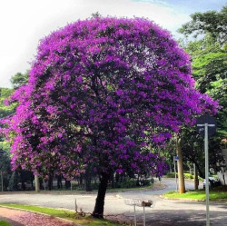
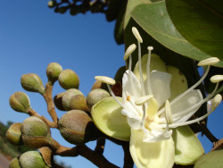

Se você estiver com problemas com as imagens, clique aqui
O que é a Mata Atlântica?
A Mata Atlântica é um conjunto de formações vegetais e ecossistemas, que possui grande destaque para espécies endêmicas (espécies próprias daquele lugar). Atualmente, devido ações antrópicas, restam somente 12,4% da floresta que costumava existir, segundo a fundação SOS Mata Atlântica.
Esse é um bioma de floresta tropical que pode ser encontrado na Argentina, no Brasil e no Paraguai. Sendo maior parte desse bioma presente no Brasil. Ela é constituída de florestais nativas e ecossistemas associados. Segundo o Ministério do Meio Ambiente, as formações florestais que fazem parte da Mata Atlântica, pode-se citar:
Floresta Ombrófila Densa
Floresta Ombrófila Mista
Floresta Ombrófila Aberta
Floresta Estacional Semidecidual
Floresta Estacional Decidual
Os ecossistemas associados:
Restingas
Manguezais
Campos de altitude
Brejos interioranos
Encraves florestais do nordeste
Fauna
O que compõe sua fauna?
Com uma fauna e flora semelhante à da Amazônia, é muito comum ver uma vasta variedade de espécies, apesar de haver uma séria precariedade a respeito dos levantamentos da fauna na Mata Atlântica. Apesar de tudo, ela tem a segunda maior biodiversidade das Américas. A fauna é composta por uma séria de espécies endêmicas, como 270 espécies de mamíferos, 370 espécies de anfíbios, 200 de répteis e 350 de peixes. Os principais são:
Pica-pau-da-cabeça-amarela
Gavião-de-penacho
Mico-leão-dourado
Mico-leão-de-cara-preta
Onça-pintada
Tamanduá-bandeira
Sagui-da-serra
Ouriço-preto
Rato-do-mato
Sapo-cururu
Perereca-verde
Perereca-de-bromélia
Jacaré-do-papo-amarelo
Jararaca
Cágado amarelo
Cobra coral
Falsa-coral
Flora
O que compõe sua flora?
Quanto à flora, a floresta é uma das mais ricas quando o assunto são plantas. Essa facilidade em desenvolver plantas saudáveis se deve pelo fato de que a altitude, latitude, precipitação e solo serem elementos que corroboram diretamente para uma flora saudável e bem desenvolvida. Alguns exemplos são:
Bromélias
Begônias
Orquídeas
Ipê
Palmeiras
Quaresmeira

Pau-brasil
Cipós
Jacarandá
Jatobá

Jequitibá-rosa
Figueiras
Extensão territorial
Qual o tamanho do bioma?
O bioma ocupava 1,3 milhões Km² (SOS Mata Atlântica), perpassa 17 estados brasileiros e 3 países (Argentina, Brasil e Paraguai), de modo que se estende pela parte costeira do país. No entanto, devido ações humanas, parte desse bioma foi perdendo suas florestas, de modo que restam apenas 29% da sua cobertura original (Funcate2015). Devido a colonização europeia, a Mata Atlântica passou por um intenso desmatamento, restando menos da metade do que tinha antes, como citado. As áreas de domínio abrangiam, de forma significativa, 17 estados, conforme mostrado na tabela:
Mata Atlântica em 1500
Estado
Área de domínio
Alagoas
53%
Bahia
33%
Ceará
3%
Espírito Santo
100%
Goiás
3%
Mato Grosso do Sul
18%
Minas Gerais
46%
Paraíba
12%
Paraná
98%
Pernambuco
18%
Piauí
9%
Rio de Janeiro
100%
Rio Grande do Norte
6%
Rio Grande do Sul
48%
Santa Catarina
100%
São Paulo
68%
Sergipe
54%
Impactos ambientais
O que é o Brasil "Terra Brasilis" e quais as consequências desse passado?
Dentre as ações antrópicas que prejudicam esse bioma tão precioso, as principais são o desmatamento, que vem acontecendo a mais de 400 anos; a criação de áreas para agricultura e agropecuária; a exploração exagerada dos recursos; a expansão urbana; e o tráfico de animais silvestres.
Grande parte da vegetação do bioma foi assolado pela exploração intensiva e desordenada dos portugueses, tendo como principal alvo o pau-brasil, usado para a extração e exportação. O primeiro contrato comercial para a exploração da madeira, feito em 1502, levou o Brasil ao título de "Terra Brasilis", ligando o nome do país à exploração da madeira avermelhada.
Projetos sustentáveis
Existem órgãos que visam conservar a Mata Atlântica?
Apesar de tudo, existem projetos que visam conservar a Mata Atlântica. Dentre eles, pode-se citar o SOS Mata Atlântica e o WWF-Brasil. Segundo o site, o SOS Mata Atlântica "atua na promoção de políticas públicas para a conservação da Mata Atlântica por meio do monitoramento do bioma, produção de estudos, projetos demonstrativos, diálogo com setores públicos e privados, aprimoramento da legislação ambiental, comunicação e engajamento da sociedade". Já o WWF-Brasil "atua com linhas de ação focadas nos poucos remanescentes que se mantém: a linha de planejamento ecorregional, que visa nortear ações para a conservação e uso sustentável dos recursos naturais; a de áreas protegidas, apoiando a criação e implantação de Unidades de Conservação (UC) no Bioma; e a de reabilitação da paisagem, visando um aumento da área de florestas integradas às atividades econômicas".
A sua importância
Qual a importância da Mata Atlântica em nossas vidas?
Muito mais do um lugar para milhões de pessoas e milhares de animais e vegetais, esse bioma também é um ecossistema que possui um papel importantíssimo na cadeia produtiva. Isso se deve porque, aproximadamente, 80% da produção econômica nacional provém dessa região e isso inclui plantações e agropecuárias. Outra colaboração que possui grande peso é sobre a retenção de carbono e controle de clima, pois, áreas que tem um grande volume de vegetação conseguem armazenar uma grande reserva de carbono, o que facilita o processo de fotossíntese das árvores próximas. E, por último, mas não menos importante, contribui para a formação de nuvens de chuva através da sua umidade característica.